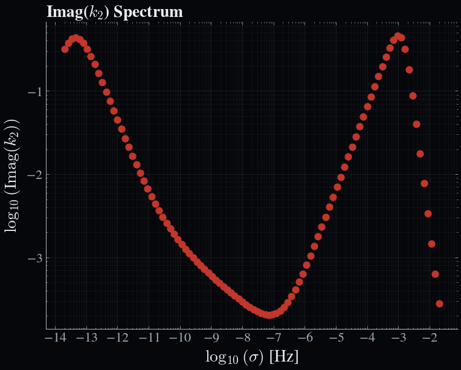

Zero-dimensional test case: The Moon
This is a simple test case to demonstrate the use of Obliqua for a zero-dimensional model of the Moon. We will create a basic data lookup table for the Moon's tidal $k$-Love number response.
Prerequisite
- Ensure that you have the
Obliquapackage installed.
Creating the data file
Use your favourite file editor IDE to create a new file called moon_data.json in the res/interior_data directory of the Obliqua package. The data file should be a JSON file with the following structure:
{
"omega": 1.0e-06,
"axial": 1.0e-06,
"ecc": 0.1,
"sma": 1.82e7,
"S_mass": 6e24,
"density": [
3500.0,
3500.0
],
"radius": [
480000.0,
995613.0,
1650000.0
],
"visc": [
1e22,
1e2
],
"shear": [
65857968278.256905,
10.0
],
"bulk": [
147739735943.7933,
1000000000.0
],
"phi": [
0.0,
1.0
],
"ncalc": 1000
}The values provided here reflect a partially molten Moon, with a fluid iron core, a solid mantle, and a partially molten crust. Although we do not require the orbital parameters for this test case, we still need to provide them in the data file. The values provided here are arbitrary and do not affect the tidal response calculations.
The configuration file
The configuration file should be a TOML file with the following structure:
title = "Moon"
version = "1.0"
[params]
[params.out]
path = "out"
time = 0.0
logging = "INFO"
plot_fmt = "png"
# Orbital system
[orbit]
[orbit.obliqua]
store_3D = false
enforce_ec = false
optimize_scales = false
solid_shell = false
min_frac = 0.05
visc_l = 1e2
visc_lus = 1e3
visc_s = 1e22
visc_sus = 1e21
n = [2]
m = [0, 2]
spectrum = "full"
N_sigma = 100
p_min = -8
p_max = 4
s_min = "none"
s_max = "none"
material_mu = "andrade"
material_k = "andrade"
alpha = 0.3
module_solid = "solid0d"
module_mushy = "none"
module_fluid = "fluid0d"
[orbit.obliqua.solid]
ncalc = 100
dr_min = 300
dr_max = 3000
core = "liquid"
core_props = "core"
inertial_terms = true
bulk_l = 1e9
dbulk_power = 0.5
porosity_thresh = 3e-2
[orbit.obliqua.fluid]
sigma_R = 2e-3
sigma_R_inf = 1e-3
sigma_R_prf = "dynamic_interp"
H_R = 1e5
efficiency = 1e0
[orbit.obliqua.mushy]
b_width = 5e-1
t_width = 3e-2
[struct]
core_density = 7822.0
core_shear = 0.0
core_bulk = 5e11
[interior_energetics]
grain_size = 0.1Create it in the res/config directory of the Obliqua package and name it moon_config.toml. Key parameters to note are the module_solid, module_mushy, and module_fluid parameters, which specify the tidal model to use for the solid, mushy, and fluid layers, respectively. In this case, we are using the solid0d model for the solid layer and the fluid0d model for the fluid layer. The mushy layer is not used in this test case. We are also using the andrade rheological model for both the shear and bulk moduli. For the full spectrum, we are using 100 probe forcing frequencies, which are logarithmically spaced between 10⁻⁸ and 10⁴ Hz.
Note that many of the parameters in the configuration file are not used in this test case, but are required for the Obliqua.run_tides function to work. They are left as the default values found in the all_options.toml configuration file.
Running the test case
With these files in place, we can now run the test case. The following code snippet demonstrates how to do this.
using Obliqua
# Load configuration
cfg = Obliqua.open_config("res/config/moon_config.toml")
# Load interior model
omega, axial, ecc, sma, S_mass, rho, radius, visc, shear, bulk, phi, ncalc =
load.load_interior_mush_full("res/interior_data/moon_data.json", false)
# Extract mush zone properties
perm = Obliqua.interior.get_permeability(phi, cfg)
perm, phi = Obliqua.interior.limit_porosity(perm, phi, cfg)
bulkd = Obliqua.interior.get_drained_bulk(bulk, phi, cfg)
# Run tidal calculation
power_prf, power_blk, nmk, σ_range, LNk = Obliqua.run_tides(
omega, axial, ecc, sma, S_mass, rho, radius, visc, shear, bulk, bulkd, phi, perm, cfg
)Expected output
At this point, the function will return several outputs in the terminal:
[ Info: Loading interior from JSON file: res/interior_data/moon_data.json
[ Info: Using configuration 'Moon'
[ Info: Using (n, m, k) = (2, 0, 1) for full spectrum.
[ Info: Smoothing complex modulus profiles to avoid sharp jumps in viscosity...
[ Info: Smoothing between indices 1 and 2 (r = 480000.0 to 995613.0 m)
[ Info: Writing results to /out/0_obliqua.nc
[ Info: Expected bulk heating: 2.9281844574776967e22
[ Info: Obtained bulk heating: 0.0First, Obliqua will load the interior data and the configuration file. Next it will decide on which modes to include in the calculation. In this case, we are using the full spectrum, which restricts to the same mode for all forcing frequencies. Next, the complex modulus profiles are smoothed to avoid sharp jumps in viscosity, which can cause numerical instabilities. Finally, the results are written to a NetCDF file in the out directory. The expected bulk heating is also printed to the terminal, which is the total tidal dissipation rate in Watts. However, this is not relevant for the full spectrum. The obtained bulk heating is also printed, which is the total radially integrated tidal dissipation rate from the heating profile in Watts, and should be zero for all zero-dimensional models.
Let us now run the examples/visualize_output.ipynb notebook to visualize the results. The output should look like this:

Here we see the imaginary part of the tidal $k$-Love number as a function of the forcing frequency. We see both the solid and fluid contributions to the tidal response. The solid contribution is dominant at low frequencies, while the fluid contribution is dominant at high frequencies. This is the expected behaviour for a partially molten Moon.